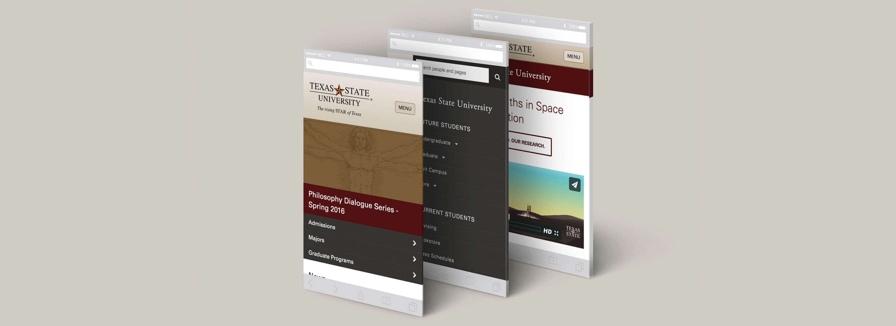

Job Announcement for Texas State
August 21, 2016
Web Content Strategist
The Texas State University website
Overview
Texas State University is hiring a Web Content Strategist to tackle our biggest, public-facing web projects and deliver a best-in-class experience for website visitors.
It’s a one year, fixed-term project position with full-time hours and complete benefits. We cover this in greater detail below.
About University Marketing
You’ll join a small group of creatives operating a bit like an agency within the university. We communicate on Slack, debate about Central Texas barbecue, geek out about movies (or, more recently, Stranger Things), and produce really solid work that delights our partners and makes us proud.
{kind=link}
Our web team is both very lean and highly autonomous. We’ve established ourselves as an authority on front-end web issues and are trusted with the highest-impact projects available. We get to help people every day, and our efforts are appreciated across campus and by the web community.
History and Challenges
Texas State has about 400 websites and 50,000 public webpages, most of which are published inside our content management system. Due to volume, we rely on individual units to write, organize, govern and strategize their own content with little institutional support. Only a handful of departments employ a dedicated web professional, so results vary … a lot.
Like much of the public sector, we’re a bit behind from a digital perspective. The good news is that we’ve made some progress on the web recently, and we’re building systems to ensure this trend continues. In the last eight months we’ve:
- moved every unit over to our first responsive, multi-column template
- released our first responsive home page
- introduced a thoughtful and scalable design system
- launched in-depth consultations with web publishers
- open-sourced our CMS implementation
- built a cross-departmental web team that you’ll be a part of
About You
We’re looking for someone that has a deep understanding of the web, and how content and design fit together.
Ideally you have some experience with the following:
- independently identifying digital problems or gaps, and advocating for solutions
- managing, growing and publishing a complex website, preferably in a CMS
- using website analytics to inform content decisions
- performing site audits and planning information architecture
- crafting beautiful, concise web copy
- communicating with clients of varying levels of technical or creative ability
- working within defined brand guidelines - or developing your own
What You’ll Be Doing
Paired with our lead designer, you’ll be an integral part of the creative process, focusing on a wide variety of content-related initiatives. You may be conducting site audits, architecting site maps, wireframing content widgets, interviewing clients and test subjects, writing web copy, or extracting information from Google Analytics.
Specifically, there will be two major jobs to tackle:
- You’ll lead the content strategy for a ground-up overhaul of The Wittliff Collections website as we move them toward an elegant, museum-level experience.
- When that’s done, we’ll take everything we learned and apply it to the Texas State home page and top-level subpages, moving us from lengthy indexes to a targeted and engaging user experience.
Our Design Stack
There’s no substitute for a strong ability to learn and adapt to new processes, but an existing background with some or all of these will be extremely beneficial: Mac OS, content management systems, responsive web design, HTML/CSS, Adobe CC, Sketch, Balsamiq, UXPin, Google Analytics, and GitHub.
Bonus points if you’re familiar with OmniGraffle, Axure, Treejack or similar software.
Job Details and Benefits
This position is categorized as a full-time, fixed-term project position with a duration of one year to start. It’s funded jointly by Information Technology and University Marketing, but practically speaking you’ll be part of University Marketing and report to our director.
Salary: $45,900 - $55,900, depending on qualifications
Benefits:
- two week winter break (send us a postcard!)
- 12 vacation days (or more, depending on prior state service)
- 12 sick days
- 100% paid medical insurance, plus 50% dependent coverage
- attend a relevant conference of your choice, on us
- unlimited lynda.com subscription
- a bunch of other stuff
We’ll set you up with a 27-inch Mac and get you whatever software and books you need to do your job well. You’ll have a sit/stand desk in our newly renovated offices (completed in October) on the 8th floor of the J.C. Kellam building.
FYI: That’s just one block from the San Marcos River, where you’re welcome to join us for a lunchtime swim or picnic. Did we mention that Texas State University has the most beautiful campus in Texas?